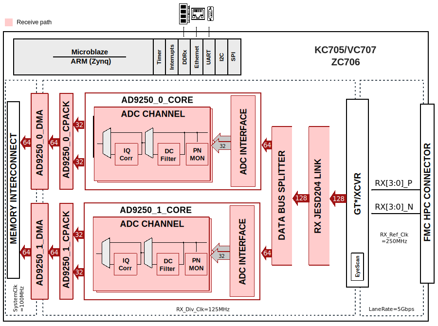
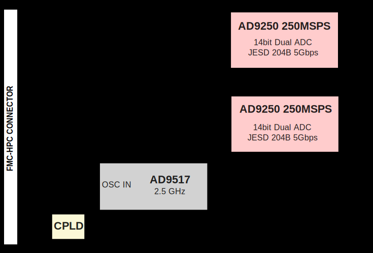

FMCJESDADC1 HDL Project (OBSOLETE)
Warning
The support for FMCJESDADC1
HDL project has been discontinued, the latest release branch where it can
be found is hdl_2021_r2. This page is left for legacy purposes only.
Overview
The AD-FMCJESDADC1-EBZ is a high speed data acquisition (4 ADC channels at 250MSPS), in an FMC form factor, which has two high speed JESD204B Analog to Digital converters (AD9250) on it.
The AD9250 is a dual, 14-bit ADC with sampling speeds of up to 250MSPS. It features a multistage, differential pipelined architecture with integrated output error correction logic. It supports wide bandwidth inputs for a variety of user-selectable input ranges. The AD9250 features JESD204B high-speed serial interface.
The boards also feature the AD9517-1 for multi-output clock distribution with sub-picosecond jitter performance, along with an on-chip PLL and VCO. The devices may be clocked by either an internal clock source (optionally locked to an external reference) or an externally supplied sample clock.
It also features an external trigger input for customized sampling control. The card is mechanically and electrically compliant to the FMC standard (ANSI/VITA 57.1).
The reference design includes the device data capture via the JESD204B serial interface and the SPI interface. The samples are written to the external DDR-DRAM. It allows programming the device and monitoring it’s internal registers via SPI.
Supported boards
Supported devices
Supported carriers
Block design
The reference design consists of a single JESD204B core and two identical instances of AD9250 pcores.
The AD9250` core consists of three functional modules, the ADC interface, a PN9/PN23 monitor and a DMA interface. The ADC interface captures and buffers data from the JESD204B core. The DMA interface then transfers the samples to the external DDR-DRAM. The capture is initiated by the software. The status of capture (overflow, over the range) are reported back to the software.
All the pcores have an AXI lite interface that allows control and monitoring of data generation and/or capture.
The reference design also includes HDMI cores for GTX eye scan.
The ADC sampling rate can vary from 40MHz to 250MHz. However, there are limitations imposed by the FPGA that may lower this range. In some cases, you may have to regenerate the cores for a different range. The reference design uses GTX (channel PLL) primitives and Xilinx’s JESD204B core IP. The default design runs at 250MHz clock (5Gbps rate).
As of this writing, the GTX specification & switching characteristics may be found at:
The key switching characteristics are:
The reference clock has a range of 60MHz to 670MHz (700MHz). This limits the minimum sampling clock to 60MHz. Though it is NOT recommended, it is possible to use AD9517 to generate a 40MHz sampling clock to AD9250 and a 80MHz reference clock to the FPGA.
The line rate however, varies based on speed grade, package type and the use of CPLL vs QPLL. The CPLL supports rates between 0.5Gbps to 6.6Gbps (the core may have to be changed for rates less than 3.2Gbps (sampling rate 160MHz) - and the IP may not support all the combinations). Again, it is possible to run the device on a single lane at a higher rate (rather than 2 lanes each at a lower rate) to circumvent some of the troubles of line rate dependency on parametrization, package type and speed grade.
Block diagram
The data path and clock domains are depicted in the below diagram:
{kind=link}
The FMC card is depicted in the below diagram:
{kind=link}
CPU/Memory interconnects addresses
The addresses are dependent on the architecture of the FPGA, having an offset added to the base address from HDL (see more at CPU/Memory interconnects addresses).
Instance |
Zynq/Microblaze |
|---|---|
axi_ad9250_core |
0x44A1_0000 |
axi_ad9250_xcvr |
0x44A6_0000 |
axi_ad9250_jesd |
0x44AA_0000 |
axi_ad9250_dma |
0x7C42_0000 |
SPI connections
SPI type |
SPI manager instance |
SPI subordinate |
CS |
|---|---|---|---|
PS |
SPI 0 |
AD9250 |
0 |
Interrupts
Below are the Programmable Logic interrupts used in this project.
Instance name |
HDL |
Linux Zynq |
Actual Zynq |
Linux ZynqMP |
Actual ZynqMP |
|---|---|---|---|---|---|
axi_ad9250_dma |
13 |
57 |
89 |
109 |
141 |
axi_ad9250_jesd |
11 |
55 |
87 |
107 |
139 |
Building the HDL project
The design is built upon ADI’s generic HDL reference design framework. ADI distributed the bit/elf files of this project as part of the ADI Kuiper Linux until the 2021_R2 release. The prebuilt files can be found in the previous link. Afterwards, it was discontinued.
But, if you want to build the sources, ADI makes them available on the
HDL repository. To get the source you must
clone
the HDL repository and checkout the last release branch where this project
still exists, hdl_2021_r2.
Then go to the hdl/projects/fmcjesdadc1/$carrier location and run the make command.
Linux/Cygwin/WSL
/hdl$
git checkout hdl_2021_r2
/hdl$
cd projects/fmcjesdadc1/zc706
/hdl/projects/fmcjesdadc1/zc706$
make
Resources
More information
Support
Analog Devices, Inc. will provide limited online support for anyone using the reference design with ADI components via the EngineerZone FPGA reference designs forum.
For questions regarding the ADI Linux device drivers, device trees, etc. from our Linux GitHub repository, the team will offer support on the EngineerZone Linux software drivers forum.
For questions concerning the ADI No-OS drivers, from our No-OS GitHub repository, the team will offer support on the EngineerZone microcontroller No-OS drivers forum.
It should be noted, that the older the tools’ versions and release branches are, the lower the chances to receive support from ADI engineers.